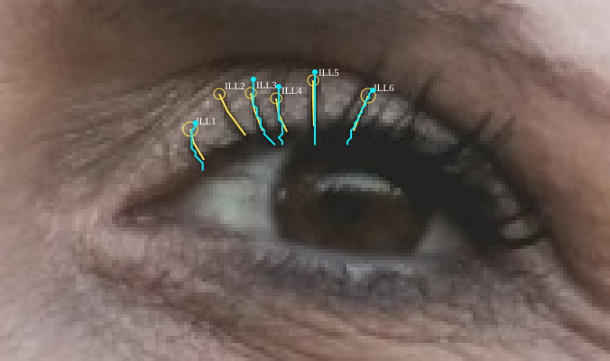
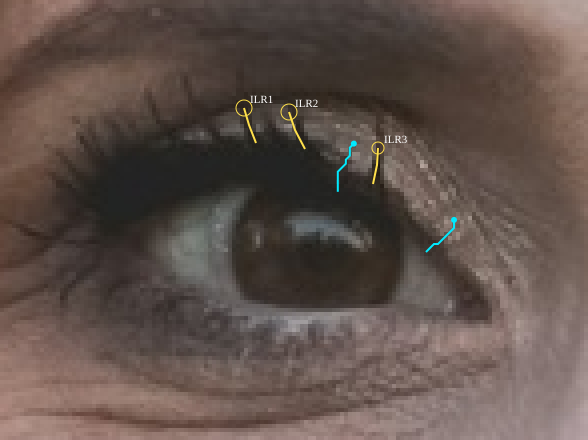
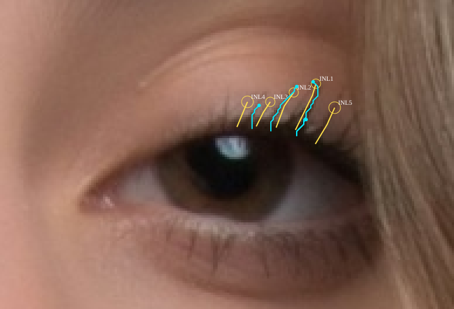
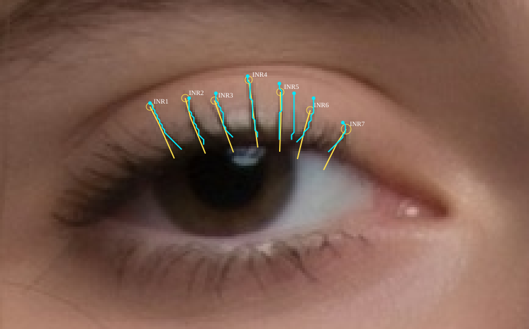
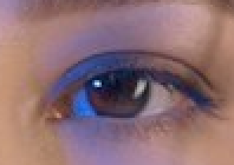
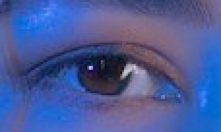

Coordinates and uncertainty are provisional visual measurements. Unlabelled candidates are unreviewed, not automatically false positives. Native crop enlarged400%, no extra sharpening.
partial-resolvable. Marked 6, eligible 5, endpoint agreements 1. Yellow = provisional visual paths and uncertainty circles. Cyan = eligible detector traces.

partial-resolvable. Marked 3, eligible 2, endpoint agreements 0. Yellow = provisional visual paths and uncertainty circles. Cyan = eligible detector traces.

partial-resolvable. Marked 5, eligible 4, endpoint agreements 1. Yellow = provisional visual paths and uncertainty circles. Cyan = eligible detector traces.

partial-resolvable. Marked 7, eligible 8, endpoint agreements 1. Yellow = provisional visual paths and uncertainty circles. Cyan = eligible detector traces.

not-resolvable. Marked 0, eligible 0, endpoint agreements 0. Yellow = provisional visual paths and uncertainty circles. Cyan = eligible detector traces.

not-resolvable. Marked 0, eligible 0, endpoint agreements 0. Yellow = provisional visual paths and uncertainty circles. Cyan = eligible detector traces.
